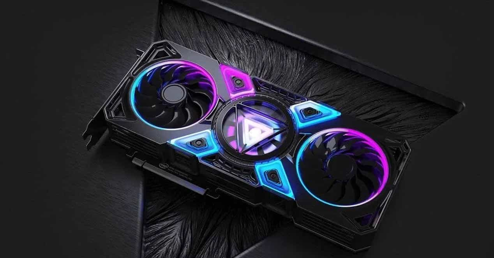

¿Qué es la tarjeta gráfica?
La tarjeta gráfica, también conocida como GPU (del inglés "Graphics Processing Unit"), es un componente fundamental en una computadora y se encarga de procesar y renderizar imágenes o videos en la pantalla.
Existen diferentes formas en que las personas llaman a las tarjetas gráficas: GPU (Graphics Processing Unit), Tarjeta de video, Placa de video, Tarjeta de gráficos, Tarjeta gráfica de vídeo, Adaptador de video, Tarjeta de visualización, Tarjeta de aceleración gráfica, Tarjeta de procesamiento de gráficos, Controlador de gráficos, Tarjeta de pantalla, etc. O por asociación a una marca o modelo, como por ejemplo la palabra placa o tarjeta y a continuación: NVIDIA, AMD, GeForce, Radeon, Intel Graphics, entre otros.
Tal vez la conocias por algunas de estas denominaciones, pero a pesar de que pueden tener distintos nombres, todas cumplen la misma función.
La tarjeta gráfica es responsable de la velocidad y calidad visual de todo lo que vemos en nuestro monitor, como juegos, películas, programas de diseño gráfico y cualquier otro contenido multimedia. En otras palabras, mientras que el procesador principal de la computadora se encarga de realizar operaciones lógicas y matemáticas, la tarjeta gráfica se especializa en procesar y mostrar imágenes en la pantalla, e incide directamente en la calidad y velocidad con que estas se muestran.
Las tarjetas gráficas actuales tienen una serie de componentes que las hacen muy potentes y eficientes, incluyendo una unidad de procesamiento de gráficos, memoria de video dedicada y ventiladores de refrigeración para mantener la temperatura bajo control. También pueden conectarse a múltiples monitores y utilizarse para realizar tareas que requieran gran cantidad de gráficos, como minería de criptomonedas o renderización de videos.
En resumen, la tarjeta gráfica es un componente vital en cualquier computadora y es esencial para la calidad visual y velocidad de cualquier contenido multimedia que se quiera reproducir. Con una tarjeta gráfica adecuada, se puede disfrutar de una experiencia visual excepcional en juegos, películas y programas de diseño gráfico.
Tal vez te preguntes: ¿Mi computadora tiene una tarjeta gráfica? ¿Todas las computadoras tienen tarjeta gráfica?
La respuesta es: sí, todas las computadoras tienen algún tipo de tarjeta gráfica integrada en su placa madre, pero su capacidad para procesar y mostrar gráficos puede variar considerablemente
Una tarjeta gráfica dedicada, que es una tarjeta separada que se conecta a la placa madre, es mucho más poderosa y eficiente que la tarjeta gráfica integrada en la placa madre.
Si bien una tarjeta gráfica dedicada puede mejorar significativamente la calidad visual de su experiencia en la computadora, no es esencial para todas las tareas. Las tareas básicas de navegación por Internet, correo electrónico y procesamiento de textos pueden ser manejadas por la tarjeta gráfica integrada en la placa madre.
En resumen, todas las computadoras tienen una tarjeta gráfica integrada, pero una tarjeta gráfica dedicada puede mejorar significativamente la calidad visual de la experiencia en la computadora para tareas más intensivas en gráficos. Es importante elegir la tarjeta gráfica adecuada para sus necesidades y asegurarse de que su computadora esté equipada para manejar las demandas de los gráficos.